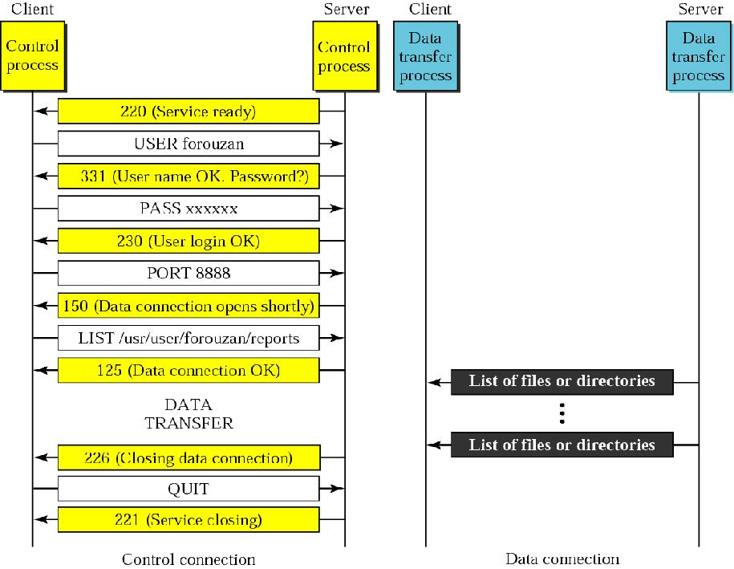
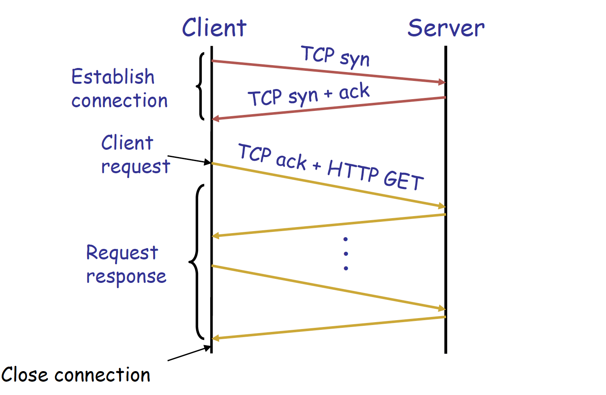

应用层（Application Layer）¶
一、互联网应用概述¶
1.1 应用（Application）¶
互联网应用本质上是运行在端系统（End Systems / Hosts）上的通信进程（Communicating Processes），通过交换消息来实现应用功能。典型应用包括：电子邮件（Email）、Web、P2P文件共享、即时通讯（Instant Messaging）等。
1.2 应用层协议（Application-Layer Protocol）¶
应用层协议是应用的一个"代理（Agent）"，定义以下内容：
- 消息类型（Types）：如请求消息（Request）与响应消息（Response）
- 消息语法（Syntax）：消息中包含哪些字段，字段如何分隔
- 消息语义（Semantics）：各字段信息的含义
- 规则（Rules）：进程何时、如何发送与响应消息
应用层协议调用下层协议（TCP、UDP、RTP）提供的通信服务。
1.3 典型互联网应用与协议对照¶
| 应用 | 应用层协议 | 底层传输协议 |
|---|---|---|
| 电子邮件 | SMTP [RFC 2821] | TCP |
| 远程终端访问 | Telnet [RFC 854] | TCP |
| Web | HTTP [RFC 2616] | TCP |
| 文件传输 | FTP [RFC 959] | TCP |
| 流媒体 | 私有协议（如RealNetworks） | RTP, RTSP, TCP or UDP |
| 网络电话 | 私有协议（如Dialpad） | SIP on UDP |
1.4 进程与用户代理¶
- 进程（Process）：运行在主机内部的程序。同一主机上的进程通过操作系统定义的进程间通信（IPC, Inter-Process Communication）通信；不同主机上的进程通过应用层协议通信。
- 用户代理（User Agent）：介于上层应用与下层网络之间的接口，实现用户界面与应用层协议。
- Web：浏览器（Browser）、Web服务器（Web Server）
- Email：邮件客户端（Mail Reader）、邮件服务器（Mail Server）
- 流媒体：媒体播放器（Media Player）、媒体服务器（Media Server）
二、应用架构¶
2.1 客户端-服务器架构（Client-Server, CS）¶
| 角色 | 特征 |
|---|---|
| Client | 按需启动；主动发起连接，"先发言"；可以使用动态IP地址 |
| Server | 以守护进程（Daemon）方式常驻运行；提供服务；拥有固定（永久）IP地址 |
典型例子：Web（浏览器 vs Apache服务器）、Email（Outlook vs 邮件服务器）。
2.2 对等架构（Peer-to-Peer, P2P）¶
- 无常驻服务器；任意端系统之间直接通信
- 各节点（Peer）既是服务请求方，也是服务提供方 → 自扩展性（Self-Scalability）：新节点带来新容量，也带来新需求
- 节点间歇性连接，IP地址动态变化 → 高可扩展但难以管理
- 典型例子：Gnutella、BitTorrent、Skype
2.3 混合架构（CS + P2P）¶
- Skype：VoIP P2P应用，集中式服务器用于发现对端地址，实际通话采用直接的客户端-客户端（Client-Client）连接
- 即时通讯（IM）：聊天本身是P2P，集中式服务器负责用户在线状态检测（Presence Detection）与IP地址定位
三、域名系统（DNS, Domain Name Service）¶
3.1 DNS 功能¶
将人类可读的域名（Domain Name）映射为机器可处理的IP地址（IP Address）。例如：www.baidu.com → 119.75.217.109。它本质上是一个分布式数据库系统，按层级组织，由很多name server（域名服务器）共同组成。主机和 DNS 服务器之间通过应用层协议通信，来完成域名解析。
DNS还提供负载均衡（Load Balancing）：一个服务器域名可对应一组IP地址集合，这样能把请求分散到多台服务器上。
为何不集中化DNS？ → 单点故障（Single Point of Failure）、流量瓶颈、远距离访问延迟、维护困难 → 无法扩展（Doesn't Scale）
3.2 DNS 设计目标¶
- 唯一性（Uniqueness）：无命名冲突
- 可扩展性（Scalability）：支持大量名称与频繁更新
- 分布式自治管理（Distributed, Autonomous Administration）：各域自主管理，无需追踪他人更新
- 高可用性（High Availability）
- 快速查询（Fast Lookups）
- 完美一致性是非目标（Non-goal）：允许短暂不一致（TTL机制）
3.3 核心思想：三层次的层级结构（Hierarchy）¶
| 层级 | 描述 |
|---|---|
| 层级命名空间（Hierarchical Namespace） | 树状结构，叶到根路径构成域名，如 cse.eecs.umich.edu |
| 层级管理（Hierarchically Administered） | 每个区（Zone）对应一个行政管理机构，如 ICANN/IANA 管理根域，各组织管理自身子域 |
| 分布式服务器层级（Distributed Hierarchy of Servers） | 分布式存储，非集中式 |
3.4 DNS 命名空间结构¶
- 顶层域名（TLD, Top-Level Domain）：
.edu,.com,.gov,.mil,.org,.net,.cn,.uk等 - 域（Domain）是子树，如
.edu、umich.edu、eecs.umich.edu - 命名路径为从叶到根：
cse.eecs.umich.edu - 树深度任意（上限128层），命名冲突天然避免
3.5 DNS 服务器层级¶
| 服务器类型 | 职责 |
|---|---|
| 根域名服务器（Root Name Server） | 被无法解析名称的本地服务器访问；返回TLD服务器的IP映射；全球共13个根服务器集群 |
| 顶层域名服务器（TLD Server） | 负责 .com, .org, .net, .edu 及国家顶级域；Network Solutions管理 .com，Educause管理 .edu |
| 权威DNS服务器（Authoritative DNS Server） | 组织自有DNS服务器，它负责自己管辖范围内的域名信息，保存这些域名的 resource records（资源记录）；提供本组织内主机名到IP的权威映射（Authoritative Hostname-to-IP Mapping） |
| 本地DNS服务器（Local DNS Server） | 不严格属于层级体系；ISP/企业/大学各自维护；也称"默认域名服务器"；有本地缓存（可能过期）；作为代理向层级体系转发查询 |
说明
只有前三层是在分级结构里面的。
权威DNS服务器是决定你的流量流向哪一个ip。
本地DNS服务器可用于加速映射，比如8.8.8.8(Google)。所有的域名解析都会先送往本地的DNS服务器，如果你的本地DNS服务器离你远的话，就会产生较大的延迟影响。
总的来说，DNS 采用层次化查询机制。主机首先向本地 DNS 服务器发起查询；若本地缓存中没有结果，则本地 DNS 依次查询根服务器、顶级域服务器和权威 DNS 服务器；其中根服务器返回 TLD 服务器信息，TLD 服务器返回权威服务器信息，权威服务器返回目标主机名对应的 IP 地址。
3.6 DNS 名称解析（Name Resolution）¶
迭代查询（Iterated Query）（常见方式）：
- 客户端[
cis.poly.edu]向本地DNS服务器[dns.poly.edu]发送查询 - 本地DNS → 根域名服务器（返回TLD服务器地址）
- 本地DNS → TLD服务器（返回权威服务器地址）
- 本地DNS → 权威DNS服务器[dns.cs.umass.edu]（返回最终IP）
- 本地DNS返回IP给客户端[
gaia.cs.umass.edu]
模式：主机-服务器：递归查询；服务器-服务器：迭代查询
注意
- 找root服务器不是本地主机找，是本地的DNS服务器找。
- DNS服务器之间的通信是一个迭代过程，不是一个递归过程；主机与本地DNS服务器之间是迭代过程。
3.7 DNS 资源记录（RR, Resource Record）¶
格式：(name, value, type, ttl)
| type | name | value |
|---|---|---|
| A | 主机名 | IPv4地址 |
| NS | 域名 | 该域的权威DNS服务器主机名 |
| MX | 域名 | 邮件服务器主机名 |
| CNAME | 别名 | 规范主机名（Canonical Name） |
name表示的是域名，ttl表示可以缓存多久。
示例：
- (networkutopia.com, dns1.networkutopia.com, NS, 32768)
- (dns1.networkutopia.com, 212.212.212.1, A, 5600)
由上表，存在把域名和权威DNS服务器之间的映射，不一定是域名和ip地址之间的映射，这个取决于
type。
3.8 DNS 协议¶
-
查询
Query与响应Reply消息使用相同格式：包含 Header: identifier, flags；Plus resource records -
默认使用 UDP(User Datagram Protocol)，端口53（协议规范也支持TCP，但多数场景还是UDP）
3.9 DNS 可靠性机制¶
- 主/辅DNS服务器复制（Primary/Secondary Replication）：至少一个副本存活即可提供服务；查询可在副本间负载均衡
- 使用UDP协议：UDP 本身不保证可靠传输，所以如果想更可靠，就要靠 DNS 自己补机制
- 超时后尝试备用服务器；重试同一服务器时采用指数退避（Exponential Backoff）[即：重试间隔会逐渐变长]
- 所有查询使用相同标识符：不关心哪台服务器响应，只要有一个正确回应就行
3.10 DNS 缓存（Caching）¶
- 查询带来最多约1秒延迟 → 缓存可大幅降低开销
- DNS服务器缓存查询响应，响应中包含 TTL（Time to Live） 字段，TTL过期后删除缓存条目
- 顶级服务器极少变化；热门网站（如
www.cnn.com）经常已被本地缓存
3.11 DNS 攻击¶
- DDoS(Distributed Denial of Service)攻击：向根服务器或TLD服务器发送大量请求（2002年10月曾发生对13个根服务器发送大量ICMP报文洪水攻击，因本地缓存、分组过滤阻止ICMP报文等机制未奏效）
-
重定向攻击（Redirect Attacks）：
- 中间人攻击（Man-in-the-Middle）：攻击者截获 DNS 查询，返回假的结果，让主机访问到错误的网站
- DNS投毒（DNS Poisoning）：向DNS服务器发送伪造响应并使其缓存，造成多次导向错误地址 → DNS污染（解决方案：修改host文件）
-
利用DNS实施DDoS放大攻击（DNS Amplification）：伪造源地址（目标IP）发送查询，DNS响应大量涌向目标IP。此时的DNS成为“攻击工具”。
四、电子邮件（Electronic Mail）¶
4.1 主要协议¶
| 协议 | 全称 | 功能 |
|---|---|---|
| SMTP | Simple Mail Transfer Protocol | 传递纯文本邮件（发送） |
| MIME | Multipurpose Internet Mail Extension | 传递多媒体内容（图片、音视频等） |
| POP3 | Post Office Protocol v3 | 邮件从服务器取回（含授权与下载） |
| IMAP4 | Internet Mail Access Protocol v4 | 在服务器上操作存储的邮件 |
4.2 邮件系统组件¶
- 用户代理（User Agent）：撰写、编辑、阅读邮件（如 Outlook, Foxmail）；收发邮件存储于服务器
- 邮件服务器（Mail Server / Host）：
- 邮箱（Mailbox）：存储用户收到的邮件
- 消息队列（Message Queue）：存储待发送邮件
- 服务器间使用 SMTP协议 传递邮件
4.3 邮件投递三阶段¶
| 阶段 | 描述 |
|---|---|
| 第一阶段 | 本地用户代理（SMTP Client）→ 本地SMTP服务器（SMTP Server） |
| 第二阶段 | 本地SMTP服务器（此时作SMTP Client）→ 远程SMTP服务器（SMTP Server） |
| 第三阶段 | 远程用户代理通过邮件访问协议（POP3 / IMAP4 / HTTP）从远程服务器取回邮件 |
4.4 SMTP 协议详解¶
- 规范：RFC 821标准；使用 TCP，端口25；直接传输（Direct Transfer）：从客户端直接传到服务器
- 需要邮件信封信息（即消息头部，比如发件人、收件人）；可在消息头中添加路径日志
- 不规定邮件内容格式（内容格式由 RFC 822 / MIME 定义）；消息必须为 7-bit ASCII
SMTP 三阶段传输（Transaction）：
- 握手（Handshaking / Greeting）
- 数据传输（Transfer of messages data）
- 关闭连接（Close connection）
交互模式：命令（ASCII文本）/ 响应（状态码 + 短语），例如：
SMTP可靠性：基于TCP提供可靠传输；但无法保证恢复丢失邮件；对发件人无端到端确认(能保证邮件到达对方的服务器，但不保证对方看到)；错误通知仅指示到达主机，不保证送达用户邮箱；总体被视为可靠。
4.5 邮件消息格式（RFC 822）¶
两部分格式：
- 头部（Header）：keyword: value 格式，如 From:, To:, Cc:, Subject:, Date:
- 正文（Body）：纯文本内容，仅ASCII字符
- 头部与正文以空行分隔；邮件以两个 <CRLF> 结束
邮件地址格式：mailbox@SMTP_Server，其中 mailbox 是SMTP服务器上的邮箱名，SMTP_Server 是DNS名或IP地址。
4.6 MIME¶
- Multipurpose Internet Mail Extension
- 扩展并自动化编码机制；允许在单封邮件中包含多种独立组件（程序、图片、音频、视频）
- 与现有邮件系统兼容（全部编码为7-bit ASCII，非MIME客户端忽略MIME头部）；可扩展
MIME 5个新邮件头字段：
| 字段 | 作用 |
|---|---|
| MIME-Version | MIME版本号 |
| Content-Type | 内容类型（如 image/jpeg, multipart/mixed） |
| Content-Transfer-Encoding | 编码方式（如 base64） |
| Content-Id | 内容标识符 |
| Content-Description | 内容描述 |
4.7 邮件访问协议¶
| 协议 | 特点 |
|---|---|
| POP3 | 授权（user/pass）+ 下载（list/retr/dele/quit）；"下载后删除"或"下载保留"模式；跨会话无状态（Stateless） |
| IMAP4 | 邮件保留在服务器（单一位置）；支持文件夹操作；跨会话维护状态（文件夹名、消息状态等） |
| HTTP | Gmail、Hotmail、Yahoo等Web邮件系统使用 |
4.8 POP3¶
POP3（Post Office Protocol version 3）用于从邮件服务器中下载邮件。
工作过程
-
认证阶段（Authorization phase
客户端使用以下命令登录服务器：
USER：输入用户名
PASS：输入密码服务器返回两种典型结果：
+OK：登录成功
-ERR：登录失败 -
事务阶段（Transaction phase） 登录成功后，客户端可以对邮件进行操作：
LIST：列出邮件编号
RETR：按编号读取邮件
DELE：删除邮件
QUIT：退出连接
POP3 更强调“把邮件取到本地”。常见使用方式有两种：
- download and delete：把邮件下载到本地后，从服务器删除。
- download and keep：把邮件下载到本地，同时在服务器保留副本。
POP3 跨会话通常不保存太多状态，因此不擅长同步以下信息：已读/未读；是否回复；邮件文件夹；删除状态。 因此POP3协议适合单设备收邮件，或者主要希望把邮件保存在本地的场景。
4.9 IMAP4¶
IMAP4（Internet Mail Access Protocol version 4）用于在服务器上访问和管理邮件。其核心思想是邮件主要保存在服务器端，不同设备访问的是同一份邮件数据。
IMAP4 支持在服务器上直接管理邮件，例如：文件夹管理；多设备同步；保存邮件状态；记录已读、已回复、已删除等信息。
它还能保存跨会话状态，例如：文件夹名称；邮件与文件夹的对应关系；邮件当前状态 。
因此IMAP4适合手机、电脑、平板等多个设备同时使用同一个邮箱的情况。
| 协议 | 核心特点 | 邮件主要存放位置 | 状态/文件夹管理 | 适用场景 |
|---|---|---|---|---|
| POP3 | 以“接收并下载邮件”为主，客户端通常把邮件取回本地后阅读和管理 | 本地为主；服务器端可选择保留副本或下载后删除 | 较弱。通常不维护完整的跨设备状态，不擅长同步已读、删除、文件夹等信息 | 主要在单设备上收邮件，或希望把邮件长期保存在本地 |
| IMAP4 | 以“在服务器上访问和管理邮件”为主，各设备访问的是同一份邮箱数据 | 服务器为主 | 较强。支持文件夹、已读/未读、回复、删除等状态的统一管理与同步 | 多设备同时使用同一邮箱，需要统一管理邮件状态 |
五、文件传输协议（FTP, File Transfer Protocol）¶
5.1 基本特性¶
- 规范：RFC 959；使用 TCP，控制端口21，数据端口20
- 客户端/服务器模型，由客户端发起传输（上传或下载）。用户并不是直接操作服务器文件系统，而是通过 FTP 客户端向服务器发送命令。
- 处理异构操作系统与文件系统（Heterogeneous OS and File Systems），即跨平台文件传输
- 需要对远程文件系统进行访问控制，有权限管理
5.2 控制连接与数据连接¶
FTP 使用带外（Out-of-Band）控制连接，即控制信道与数据信道分离：
| 连接类型 | 端口 | 说明 |
|---|---|---|
| 控制连接（Control Connection） | 21 | 持久存在于整个会话；传递命令与响应，用于客户端在控制连接上完成认证、浏览目录（通过命令完成） |
| 数据连接（Data Connection） | 20 | 每次文件传输时由服务器向客户端开启；传完即关闭 |
- FTP服务器维护用户状态（User State）：当前目录、认证信息，所以FTP被成为有状态协议（stateful）

5.3 常用命令与响应码¶
命令（ASCII文本，经控制信道传送）：USER、PASS、LIST、RETR filename、STOR filename
响应码示例：
331— 用户名OK，需要密码125— 数据连接已打开，开始传输425— 无法打开数据连接452— 写文件出错
六、万维网（World Wide Web，WWW）与HTTP（Hyper Text Transport Protocol）¶
6.1 WWW 历史¶
- 1990年：Tim Berners-Lee 在CERN发明首个HTTP实现
- HTTP/0.9 (1991)：仅支持简单GET命令
-
HTTP/1.0 (1992)：客户端/服务器信息、简单缓T
-
HTTP/1.1 (1996)：性能与安全优化（持久连接、流水线等）
- HTTP/2 (2015)：通过单TCP连接的请求多路复用（Request Multiplexing）、二进制协议、服务器推送（Server Push）
6.2 Web 三大组件¶
- 基础设施（Infrastructure）：客户端、服务器（DNS、CDN、数据中心）
- 内容（Content）：URL（命名内容）、HTML（格式化内容）
- 协议（Protocol）：HTTP
6.3 URL（Uniform Resource Locator）¶
格式：<protocol>://<host>:<port>/<path>?query_string
- protocol：传输或解释对象的方法，如
http,ftp,Gopher - host：对象所在主机的DNS名或IP地址
- port：端口号，表示服务运行的入口
- path：包含对象的文件路径名
- query_string：以键值对形式发送给服务器应用的参数
示例：http://www.nju.edu.cn:8080/somedir/page.htm
6.4 HTTP 协议特性¶
- 客户端-服务器架构：服务器常驻（Always-On）且地址固定；客户端主动发起连接，服务器返回响应
- 同步请求/响应协议（Synchronous Request/Reply）：运行于 TCP，端口80
- 无状态（Stateless）：每次请求-响应独立处理，服务器不保留用户状态
- ASCII格式早期 HTTP/1.x 在 HTTP/2 之前主要是文本格式
6.5 HTTP 请求/响应流程¶

6.6 HTTP 方法类型（HTTP/1.1）¶
| 方法 | 功能 |
|---|---|
| GET | 请求获取指定资源 |
| HEAD | 类似GET，但只返回头部（无Body） |
| POST | 提交数据（如Web表单） |
| PUT | 上传文件到URL指定路径 |
| DELETE | 删除URL指定的文件 |
6.7 HTTP 消息格式¶
请求消息（Request Message）：
响应消息（Response Message）：
6.8 HTTP是无状态协议¶
优点（服务器端可扩展性更好）：
- 故障处理更简单，某台服务器挂了，换另一台处理请求也比较方便。
- 可处理更高请求速率，因为每个请求都独立。
- 请求顺序无关。因为当前的请求不强依赖“上一条请求的状态”。
缺点（某些应用需要持久状态）：
- 需要唯一识别用户或存储临时信息
- 如：购物车（Shopping Cart）、用户画像（User Profiles）、使用追踪（Usage Tracking）
6.9 Cookie：在无状态协议中维护状态¶
原理：客户端侧状态维护（Client-Side State Maintenance）
- 服务器在响应中设置
Set-Cookie: XYZ - 客户端存储Cookie
- 后续请求携带
Cookie: XYZ发送给服务器 - 服务器据此识别用户，访问后端数据库
Cookie 的应用：授权（Authorization）、购物车、推荐系统、Web邮件会话状态
Cookie 与隐私：服务器可借此大量了解用户行为；搜索引擎可跨站获取用户信息；被劫持的浏览器可能滥用Cookie。
6.10 HTTP 性能分析¶
定义RTT（Round-Trip Time）表示小分组从客户端到服务器再返回的时间。
单次对象响应时，由6.5，需要1个RTT用于TCP建立，1个RTT用于HTTP请求与首字节响应，接着再进入数据传输。因此单次对象响应时间为：
就算传输的对象很小，但是网络延时很高，\(RTT\)过大，HTTP也会显得特别慢。
-
获取n个小对象（\(\Delta\)为传输时间）：
策略 时间复杂度 说明 非持久连接，逐个获取（HTTP/1.0默认） \(2(n + 1)\cdot RTT + \Delta\) 每次要先拿HTML框架再进行对象的传输；每个对象新建TCP连接，开销大 并发连接（\(m\)条并行） \(\sim 2⌈n/m⌉ \cdot RTT\) 网络侧不友好（TCP公平性问题） 持久连接（HTTP/1.1默认） \(\sim (n+2) \cdot RTT\) 复用同一TCP连接；底层可学习RTT和带宽特性 流水线（Pipelined） \(\sim 3 \cdot RTT\) 批量请求，减少包数量；多个请求可置于一个TCP段 流水线 + 持久（最优） 首次\(\sim 3\cdot RTT\)，后续\(\sim 1\cdot RTT\) HTTP/1.1推荐方式 -
获取n个大对象（每个大小为F）：
方式 时间近似公式 适用理解 说明 one-at-a-time \(\sim nF / B\) 顺序下载 \(n\) 个大对象 总数据量是 \(n \times F\)，带宽是 \(B\)，所以总时间约等于总数据量除以带宽 m concurrent \(\sim \lceil n/m \rceil \times F / B\) 每轮并发下载 \(m\) 个对象 大约分成 \(\lceil n/m \rceil\) 轮，每轮传一批对象；假设每个 TCP 连接都能分到差不多的带宽，本质上是多路使得总带宽增加。 pipelined and/or persistent \(\sim nF / B\) 连接复用，但瓶颈仍是带宽 对大对象来说，主要耗时在传数据本身，减少 RTT 和建连开销帮助不大 由此可见，对于大对象下载，HTTP 性能主要受带宽限制。持久连接和流水线对这种场景帮助不大；真正显著改善速度的，要么是并发拿更多带宽，要么就是直接提升链路带宽。
思考：以下三种传输的用时是多少，瓶颈是什么：
- \(F = 100Mb, B = 100Mbps\)：\(1s\)
- \(F = 1Kb, B = 1Gbps\)：肯定比1微秒高，因为瓶颈在\(RTT\)
- \(F = 1000Gbps, B = 400 Gbps\)：肯定比\(2.5s\)高，因为瓶颈在端侧I/O读写
一般好的网络：e2e传输速度在400兆，\(RTT\)在毫秒级。
6.11 缓存（Caching）¶
工作原理：利用引用局部性（Locality of Reference）；缓存有效性随缓存容量对数增长，这表明缓存的边际效应递减。
HTTP缓存机制（If-Modified-Since）：
用于客户端主动请求服务器。
- 客户端在GET请求中携带
If-modified-since: <time> - 服务器比对资源的
Last-Modified时间(cache revalidation机制)：- 未修改 → 返回
304 Not Modified（无Body，节省带宽） - 已修改 → 返回
200 OK+ 最新资源
- 未修改 → 返回
例如：
响应头缓存控制：
服务器也能主动通过响应头声明缓存策略。
-
Expires：指定资源缓存的安全期限，表示在此时间之前，缓存副本可以被认为是“新鲜的（fresh）”，例如： -
No-cache：忽略所有缓存，始终从服务器获取最新资源
缓存部署位置：
| 位置 | 类型 | 特点 |
|---|---|---|
| 浏览器本地 | 客户端缓存 | 个人级别 |
| ISP/企业边界 | 正向代理（Forward Proxy） | 靠近客户端；减少网络流量和延迟；由ISP或企业部署 |
| 内容提供方边界 | 反向代理（Reverse Proxy） | 靠近服务器；降低源服务器负载；由内容提供方部署 |
| 分布式节点 | 内容分发网络（CDN） | 全球分布，综合以上优势 |
| 对比项 | Reverse Proxy | Forward Proxy |
|---|---|---|
| 位置 | 靠近服务器 | 靠近客户端 |
| 部署对象 | 内容提供方 | ISP / 企业 / 组织 |
| 主要目标 | 降低源站负载、保护后端 | 降低网络流量、减少客户端延迟 |
| 客户端是否感知 | 通常无感知，直接把它当服务器 | 客户端通常需要配置或处于代理网络后 |
| 典型用途 | 网站加速、负载均衡、源站保护 | 企业出口代理、校园网缓存、运营商缓存 |
七、内容分发网络（CDN, Content Distribution Networks）¶
7.1 背景与挑战¶
- 从单一源服务器实时流式传输大型文件（如视频），大文件实时传输压力很大
- 保护源服务器免受 DDoS 攻击
- 海量用户并发导致服务器与网络过载
7.2 CDN 解决方案¶
- 在全球数百台服务器上复制（Replicate）内容，CDN分发节点（Distribution Node）协调内容分发
- 将内容放置在靠近用户的位置（Placing Content Close to User）
- 内容提供商（Origin Server）是CDN的客户（Customer），CDN将客户内容复制到CDN服务器；内容更新时CDN同步更新
- 由CDN本身的权威DNS服务器完成重定向
7.3 CDN 支撑技术¶
| 技术 | 说明 |
|---|---|
| DNS（负载均衡） | 一个域名映射多个IP地址 |
| 内容路由（Content-Based Routing） | 将请求路由到最近的CDN服务器 |
| URL重写（URL Rewriting） | 将 http://www.sina.com/sports/tennis.mov 重写为 http://www.cdn.com/www.sina.com/sports/tennis.mov |
| 重定向策略（Redirection Strategy） | 综合考虑负载均衡、网络延迟、缓存/内容局部性 |
7.4 CDN 工作流程¶
- URL重写：获取CDN权威服务器地址
- 向CDN权威DNS服务器查询，获取最近CDN服务器IP
- 预热CDN缓存（Warm Up CDN Cache）：CDN服务器从源服务器拉取内容
- 客户端直接从CDN服务器获取页面/媒体
7.5 CDN 重定向机制¶
- CDN构建网络拓扑图（Map），标注各叶ISP与CDN服务器之间的距离
-
DNS查询到达权威DNS服务器时：
- 服务器识别查询来源ISP
- 使用Map确定最佳CDN服务器
-
CDN服务器形成一个应用层覆盖网络（Application-Layer Overlay Network）
八、Web 性能优化总结¶
| 目标 | 方案 |
|---|---|
| 协议层面 | 改进HTTP（持久连接、流水线、HTTP/2多路复用）、改进TCP |
| 缓存与复制 | 正向代理缓存、反向代理缓存、CDN、浏览器缓存 |
| 基础设施 | 利用规模经济（Economies of Scale）：Web托管、CDN、数据中心 |